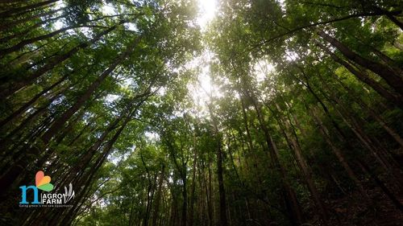

Mahogany Tree Plantation: How To Grow, Its Benefits And More
Mahogany trees are very popular in India for their wood used in making furniture and other decorative pieces. Its popularity is its high density and sturdiness along with its reddish-brown hue. Moreover, it has a high resistance to rot. Mahogany trees also possess several medicinal benefits, and thus they are always in high demand.
Indian Mahogany, also known as the “khaya Mahogany,” is a famous type of Mahogany in the country. Other species of the tree are Swietenia macrophylla (big-leaf Mahogany) and Swietenia Mahagoni (West Indian Mahogany). All in all, it is
All in all, Indian Mahogany is a popular wood species similar in appearance and properties to genuine Mahogany. It has various applications, particularly where strength and durability are essential. Let’s look at Mahogany tree plantation and its other aspects.
Mahogany Tree: Key Facts
| Features | Facts |
|---|---|
| Physical Description |
|
| Native Habitat |
|
| Leaves |
|
| Trunk |
|
| Flowers |
|
| Uses and Applications |
People love mahogany wood because it's not only pretty with its reddish-brown color but also super strong and resistant to damage.
|
How Nimbus is Known for Mahogany Tree Plantation?
Nimbus, a managed farmland is known for three projects: Nandi Farms Phase - I, Nandi Farms Phase - II, and Coconut Farms Phase -I. In the third project, even though the name might suggest that Nimbus only grows coconuts, that's not the case. Alongside coconut plantations, Nimbus also grows Mahogany trees for their valuable timber. These trees are over 25 years old and contribute to the natural beauty of the landscape.
Growth and Care
Growth Rate
Mahogany trees grow slowly, taking 20 to 30 years to mature. They can reach a height of 60-65 ft and a diameter of 3-4 ft, with harvesting typically occurring at 40-60 years old.
How to Grow
Care Tips
Harvesting
Mahogany trees are best harvested when they reach 25-30 years, with careful planning for felling, debarking, and processing. Proper drying of the logs enhances wood quality and stability.
Mahogany Tree Benefits
These are some of the Mahogany tree benefits.
Suitability for Homes
Mahogany is a durable and attractive option for home use in flooring, cabinetry, and furniture. However, consider factors like cost, maintenance, potential allergies, and environmental impact when choosing Mahogany for home projects.
Conclusion
Mahogany plantation, especially Swietenia mahagoni, is a type of tropical wood known for being strong, beautiful, and useful for many purposes. This tree has long, divided leaves and small, fragrant flowers, and it can grow very tall, often over 100 feet. Mahogany trees grow best in warm, sunny places with good soil that drains well and is slightly acidic. They need plenty of sunlight, regular watering, and occasional fertilizing to stay healthy.
FAQs
1. Is Mahogany tree plantation profitable?
Mahogany tree plantations can make money because Mahogany wood is valuable for making furniture, buildings, and musical instruments. However, it takes a lot of work to earn cash. You have to wait about 20 to 30 years for the trees to grow big enough to sell. Starting a plantation costs a lot at first because you need to buy land, and trees, and take care of them. But if you do it right, and the weather cooperates, you can make a good profit in the end. Just remember, it's a long-term investment that needs patience and careful planning.
2. How long does it take to grow a Mahogany tree?
Growing a Mahogany tree to maturity typically takes around 20 to 30 years. During this time, the tree goes through various stages of growth, from a small seedling to a tall, mature tree suitable for harvesting. The exact duration can vary depending on factors such as climate, soil quality, and care provided. However, once mature, Mahogany tree plantations can continue to provide valuable wood for many years to come.
3. Can Mahogany trees grow in India?
Yes, Mahogany trees can grow in India. They prefer warm climates, well-drained soil, and plenty of sunlight. While not as common as in their native habitats, Mahogany trees can still be cultivated in parts of India that meet their growth requirements.